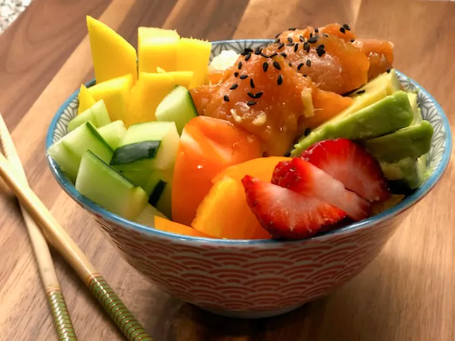

Poke Bowl

The best thing about making poke bowls is the ability to customize toppings around the main ingredient. In this case, it's smoked salmon. The smoked salmon is marinated with six ingredients for only 30 to 45 minutes, so you'll have dinner ready in a jiff.
Ingredients:
- Soy sauce
- Green onions
- Black sesame oil
- Rice vinegar
- Grated ginger
- Garlic
- Smoked salmon
- Brown rice
- Mango
- Cucumber
- Avocado
- Strawberries
- Black sesame seeds
How to make it:
- Combine soy sauce, green onions, sesame oil, rice vinegar, ginger, and garlic in a bowl. Mix until thoroughly combined. Add salmon and marinate in the refrigerator for 30 minutes to 1 hour.
- Divide brown rice among 4 serving bowls. Top with salmon, mango, cucumber, avocado, and strawberries. Sprinkle black sesame seeds on top.